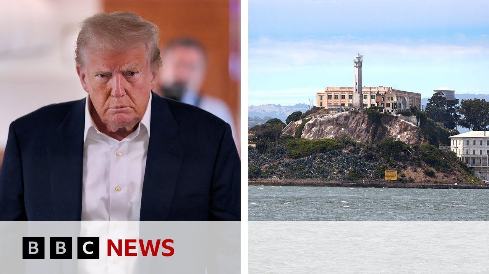

来B站一起耍【Global每日英语简报】
【美国总统特朗普下令重新开放臭名昭著的恶魔岛监狱 | BBC新闻】
Summary: US President Donald Trump has announced plans to rebuild and reopen Alcatraz prison, aiming to house violent criminals, despite practical and financial challenges.
摘要： 美国总统特朗普宣布计划重建并重新开放恶魔岛监狱，旨在关押暴力罪犯，尽管面临实际和财务挑战。

⏱️ Estimated Reading Time: 5 min
US President Donald Trump has directed officials to rebuild and reopen the notorious Alcatraz prison on an island near San Francisco's Golden Gate Bridge.
美国总统特朗普已指示官员重建并重新开放位于旧金山金门大桥附近岛屿上的臭名昭著的恶魔岛监狱。
The president says the jail will be used to house America's most ruthless and violent offenders.
总统表示该监狱将用于关押美国最残忍和暴力的罪犯。
Well, he made the announcement on his truth social account starting with uh an all capital statement, rebuild and open Alcatraz.
他在自己的Truth Social账户上以全大写字母的声明宣布了这一消息，即“重建并开放恶魔岛”。
He said he wanted the prison to be substantially enlarged before it was put back into service.
他表示希望监狱在重新投入使用前大幅扩建。
Alcatraz was shut down more than 60 years ago and turned into a museum.
恶魔岛于60多年前关闭并被改造成博物馆。
Previous inmates included notorious gangsters Al Capone, Mickey Cohen, and George Machine Gun Kelly.
曾经的囚犯包括臭名昭著的匪徒阿尔·卡彭、米基·科恩和“机枪”乔治·凯利。
More than one and a half million people visited the tiny island every year.
每年有超过150万人参观这座小岛。
Let's talk to our North America correspondent, Nomia Igbal, who joins us now from Washington.
让我们连线北美记者诺米亚·伊格巴尔，她正在华盛顿与我们连线。
Yeah, Normia, a huge visitor attraction.
是的，诺米亚，这是一个巨大的旅游景点。
I mean, I've been there amongst millions of other people, and I guess they'll be disappointed if it is u turned back into a a prison as Donald Trump's calling for.
我是数百万游客之一，如果它如特朗普所呼吁的那样重新变成监狱，我想他们会很失望。
How likely is that to happen, do you think?
你认为这有多大可能发生？
I think it's largely unlikely.
我认为可能性很小。
It's pretty impractical.
这非常不切实际。
And yeah, I mean, you know, you when you say Alcatraz, people think of like all the movies that have been made there.
是的，提到恶魔岛，人们会想到所有在那里拍摄的电影。
Clint Eastwood, Shan Connory, uh it was even in the Marvel movies and yeah, I've been as well.
克林特·伊斯特伍德、肖恩·康纳利，甚至漫威电影也出现过，我也去过。
It's like it's it's an amazing place to go and visit and you can see how isolated it is uh in terms of, you know, off the coast of San Francisco in terms of rebuilding it.
这是一个令人惊叹的游览地，你可以看到它多么孤立，远离旧金山海岸，重建也很困难。
Well, I mean, remember the reason it was closed was because it was so expensive and it would take it would cost so much money to to redo.
记住，它关闭的原因是运营成本太高，重新改造需要巨额资金。
Uh we're talking about billions here.
我们说的是数十亿美元。
And you know, it's in terms of like if if that would happen, it's it's probably not going to.
你知道，如果真的发生，可能性也很小。
I mean, the Bureau of Prisons did release a statement.
美国监狱管理局确实发布了一份声明。
Just looking at it, they said, "Look, we will comply with all presidential orders."
声明称：“我们将遵守所有总统命令。”
Um, I should mention that Donald Trump isn't the first president to suggest potentially opening it.
值得一提的是，特朗普并非第一位建议重新开放恶魔岛的总统。
President Reagan considered it in 1981, but as I say, it's it's just massively impractical.
里根总统在1981年考虑过，但正如我所说，这完全不切实际。
Nonetheless, uh, Donald Trump wants to find somewhere to house what he describes as the most dangerous and violent criminals.
尽管如此，特朗普希望找到一个地方关押他所说的最危险和暴力的罪犯。
And Alcatraz is what he's got on his mind.
而恶魔岛是他的目标。
But as I say, whether or not it will be opened, I just think it's highly highly unlikely, highly impractical, but it makes for a very splashy headline.
但正如我所说，重新开放的可能性极低，完全不切实际，但这确实是一个吸引眼球的头条新闻。
Yeah.
是的。
And just briefly, um I guess it would cost a lot in tourist revenue, wouldn't it?
简单来说，这会损失大量旅游收入，对吧？
Because because of all those visitors, if it suddenly wasn't a tourist attraction anymore, that would cost what, the state of California money?
因为如果它不再是旅游景点，加州会损失多少收入？
I don't know who who gets those funds.
我不知道这些收入归谁所有。
Yeah, it would it would it breaks at like $60 million a year just uh looking at the statistics and revenue.
根据统计数据，每年旅游收入约为6000万美元。
as you mentioned it attracts more than 1.6 million visitors a year and so it it it would lose lots of money uh in that respect.
正如你提到的，它每年吸引超过160万游客，因此在这方面会损失大量收入。
I should also add Ben over the weekend President Trump gave an interview in which he basically said that uh the US might be hit by a recession.
我还想补充，特朗普上周末接受采访时表示美国可能面临经济衰退。
He also suggested that American people should be less materialistic to try and deal with it.
他还建议美国人减少物质主义以应对衰退。
Lots of criticism over that interview.
这次采访引发了大量批评。
So there are some suggestions that saying that we should reopen Alcatraz is perhaps President Trump's way of of slightly causing a distraction.
因此有人认为，特朗普提议重新开放恶魔岛可能是为了转移注意力。
Well, it'll be fascinating to see what happens with that.
这将是一个有趣的发展。
Uh Nomia, thank you very much indeed for bringing us up to date.
诺米亚，非常感谢你为我们带来最新消息。
Nomi Rick bell.
诺米亚·里克·贝尔。
There are North America correspondents.
这里是北美记者。